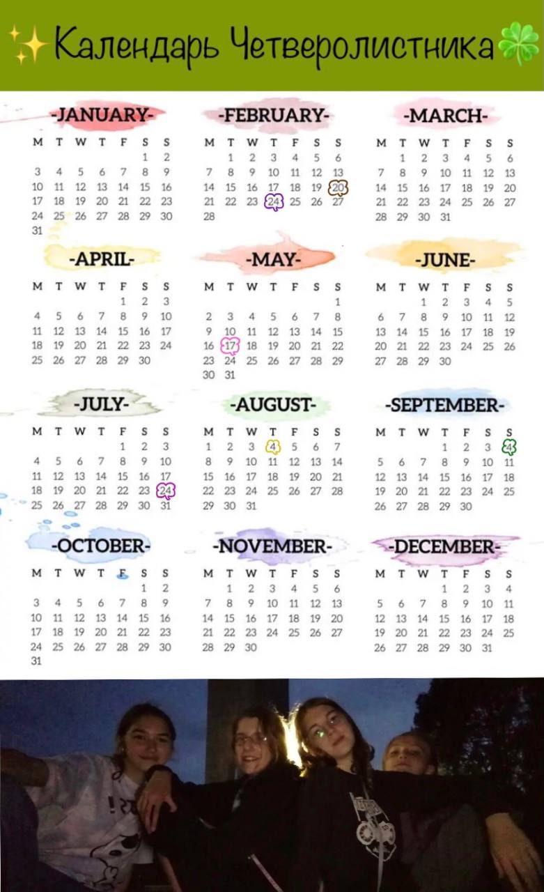

Обратно на главную
Праздники

- 20 февраля
День Рождения Маши
- 24 февраля
День Рождения Сашули
- 17 мая
День Музыки Эльфей.
этот день - среднее арифметическое наших дней рождений.
этот праздник обозначает начало лета, свободы и веселья.
в этот день мы устраеваем пикник и играем на инструментах и поем.
(17-4=13. сколько лет было самой старшей когда клуб создался)
- 24 июля
День Рождения Ксюши
- 4 августа
День Рождения Алисы
- 4 сентября
День Четверолистника.
в этот день мы также устраеваем пикник. в День Четверолистника
принято дарить открытки, а не подарки. А если уж подарки, то
что-то маленькое и символичное. Также в этот день мы надеваем наши амулеты дружбы
В 2020г. состоялся самый первый праздник